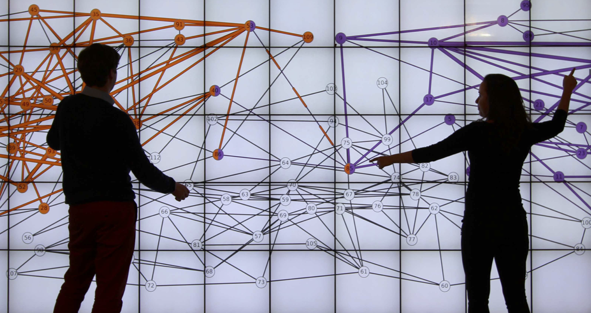
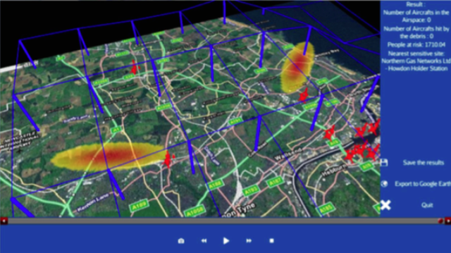

I am a PostDoc researcher in Human-Computer Interaction and Visualization at Monash University in Melbourne. I am a member of the Immersive Analytics team which investigates how immersive technologies can be used to support analytical reasoning and decision making.
During my postdoc, I focus on the building management domain. I explore how immersive platform (Virtual and Augmented Reality) can be beneficial in this context. Additionally, I explore how BIM (Building Information Modeling) can be adapted for such platforms and used to improve energy efficiency of buildings.
I did my Ph.D. in HCI at the University Paris-Sud, in France, with the ILDA Team, under the supervision of Anastasia Bezerianos and Olivier Chapuis. The topic of my Ph.D. was "Collaboration around Wall-Displays in Time Critical and Command and Control contexts".
My research interests also include Interaction, Immersive Technologies, Visualization, Collaboration and Command and Control (e.g. Air Traffic Control, Building Management).
I have an Engineering degree from the ENAC, the French School of Civil Aviation in Toulouse, where I specialized in Air Traffic Management and Computing Science. I concurrently passed a Master's Degree in human Computer Interaction at the University Paul Sabatier in Toulouse. During these degrees I worked on several projects with Thales, Airbus, the French Training Center for Air Traffic Controller and the University of Glasgow.
My resume is available here.
During my postdoc, I focus on the building management domain. I explore how immersive platform (Virtual and Augmented Reality) can be beneficial in this context. Additionally, I explore how BIM (Building Information Modeling) can be adapted for such platforms and used to improve energy efficiency of buildings.
I did my Ph.D. in HCI at the University Paris-Sud, in France, with the ILDA Team, under the supervision of Anastasia Bezerianos and Olivier Chapuis. The topic of my Ph.D. was "Collaboration around Wall-Displays in Time Critical and Command and Control contexts".
My research interests also include Interaction, Immersive Technologies, Visualization, Collaboration and Command and Control (e.g. Air Traffic Control, Building Management).
I have an Engineering degree from the ENAC, the French School of Civil Aviation in Toulouse, where I specialized in Air Traffic Management and Computing Science. I concurrently passed a Master's Degree in human Computer Interaction at the University Paul Sabatier in Toulouse. During these degrees I worked on several projects with Thales, Airbus, the French Training Center for Air Traffic Controller and the University of Glasgow.
My resume is available here.

Teaching
2016-2017
- M1 Informatique (Université de Paris-Sud) - Programming of Interactive Systems
- L1 MPI (Université de Paris-Sud) - Programmation Impérative Avancée en C++
- Polytech Paris Sud 3eme année - Intéraction Homme-Machine
2015-2016
- M1 Informatique (Université de Paris-Sud) - Programming of Interactive Systems
- L1 MPI (Université de Paris-Sud) - Programmation Impérative en C++
- L1 MPI (Université de Paris-Sud) - Programmation Impérative Avancée en C++
- Polytech Paris Sud 3eme année - Intéraction Homme-Machine
2014-2015
- M1 HCID / M1 Informatique (Université de Paris-Sud) - Programming of Interactive Systems
- L3 (Université Paris-Sud) - Programmation Concurrentielle des Interfaces Interactives
- Polytech Paris Sud 3eme année - Intéraction Homme-Machine
Publications
Journal Papers

Conference Papers


Workshop Papers
Posters
Dissertation